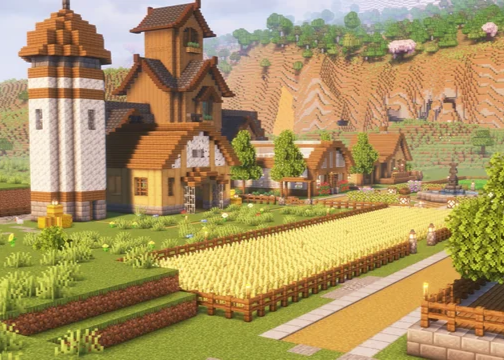

Les outils de base a fabriquer
Pour survivre et progresser dans Minecraft,il y a different outils essentiel a la survie !! Voici les outils essentiels a fabriquer des le debut :
- Pioche: Pour recolter de la pierre, du charbon et d'autres minerais.
- Pelle : Permet de recolter la terre, le sable et le gravier.
- Hache : Utile pour abattre les arbres plus rapidement et recolter du bois.
- epee : Pour se defendre contre les creatures hostiles comme les zombies et les squelettes.
- Houe : A utiliser sur la terre pour pouvoir planter des graines. (pour le ble, carottes, pomme de terre...)
Ces outils peuvent etre creer avec differents materiaux:
- Astuce: Plus le materiaux utiliser est rare meilleure seras l'efficacites (bois ,fer ,diamants et netherite),(l'or est autant efficace que le bois)
Les creatures et monstres dans Minecraft
Dans l'univers de Minecraft, les creatures et monstres ajoutent du dynamisme et des defis au gameplay. Decouvrez les differents types de creatures : passives, neutres et hostiles, ainsi que leurs particularites et leurs interactions avec les joueurs.
Les principales categories
- Creatures passives : Animaux de ferme (vaches, cochons), animaux sauvages (renards, lapins), et creatures utiles comme les villageois.
- Creatures neutres : Loups, abeilles et Enderman. Elles reagissent uniquement si provoquees.
- Creatures hostiles : Creeper, zombie, squelette, araignee, et boss comme l’Ender Dragon et le Wither.
Focus sur les Boss
- Ender Dragon : Trouve dans l’End, il s’agit du boss final.
- Wither : Un boss invoque qui cause des degats massifs.
Astuce : Les montres hostiles apparaissent uniquement en absence de lumiere ,alors placez des torches pour empecher les monstres d’apparaitre la nuit !
Les ressources a recolter
Les ressources sont la cle de votre progression dans Minecraft. Elles vous permettent de creer des outils, de construire des structures et de survivre face aux dangers.
Types de ressources
- Ressources de base : Bois, pierre, charbon. Utilisation : Creez des outils de base et des torches.
- Ressources rares : Diamant, emeraude, or. Utilisation : Fabriquez des armes et armures puissantes ou commercez avec les villageois.
- Ressources alimentaires : Ble, carottes, pommes. Utilisation : Repondent a vos besoins en nourriture pour survivre.
- Ressources du Nether : Blocs de quartz, batons de Blaze. Utilisation : Cruciales pour l’alchimie et les decorations.
Astuce : Creusez toujours avec une pioche adaptee. Utiliser une mauvaise pioche peut detruire des minerais rares comme le diamant.
La gestion de la faim et de la sante

La survie dans Minecraft depend de votre capacite a maintenir vos barres de faim et de sante a des niveaux optimaux. Voici comment gerer ces aspects cruciaux.
Gestion de la faim
- Consommez de la nourriture : Viande cuite, pain, carottes, pommes.
- evitez la nourriture crue : Cela donne moins de points de faim et peut parfois causer des effets indesirables.(la diarrhee :/ )
Gestion de la sante
- Restauration automatique : Votre sante se regenere si votre barre de faim est pleine.
- Potion de soins : Fabriquez-les a partir d’ingredients du Nether.
- Armure et bouclier : Limitez les degats reçus en portant une armure adaptee.
Astuce : Plantez vos cultures pres de l’eau et entourez-les de torches pour accelerer leur croissance meme la nuit.
Astuces de survie pour les debutants

Survivre dans Minecraft peut etre difficile, surtout pour les nouveaux joueurs. Voici quelques conseils essentiels pour vous aider a demarrer.
Les premieres etapes
- Collectez rapidement du bois pour fabriquer des outils et un abri pour la nuit.
- Trouvez un endroit sûr pour construire votre maison.
- equipez-vous rapidement d’une epee, d’une pioche et de torches.
Conseils pour la nuit
- Placez des torches pour eviter que les monstres n’apparaissent dans ou pres de votre base.
- Creusez un abri temporaire pour survivre a la premiere nuit.
Astuce : Ne creusez jamais directement sous vos pieds pour eviter de tomber dans de la lave ou un gouffre.
Les structures essentielles a construire

Pour survivre et progresser dans Minecraft, il est essentiel de construire certaines structures. Voici une liste des plus importantes.
Structures de base
- Maison : Protection contre les monstres et espace pour stocker vos ressources.
- Ferme : Source de nourriture continue. Entourez vos cultures d’eau pour maximiser leur croissance.
- Abri du Nether : Vous proteger des Ghasts et Piglins dans le Nether.
Structures avancees
- Salle d’enchantement : Ameliorez vos armes et outils.
- Usine a mobs : Collectez des objets laisses par les monstres.
Astuce : Creez des chemins balises ou des tours de repere pour ne pas vous perdre.